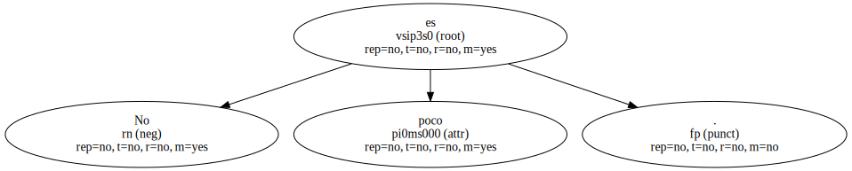
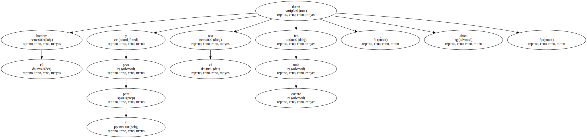
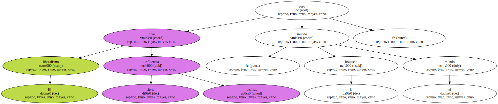
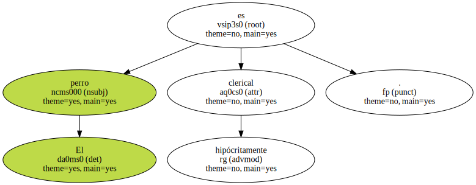
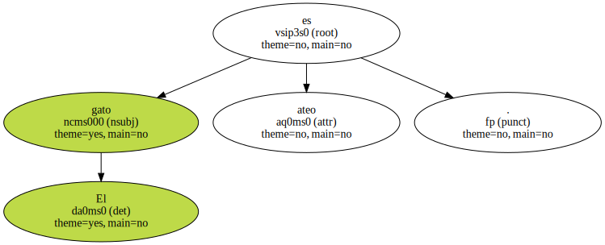
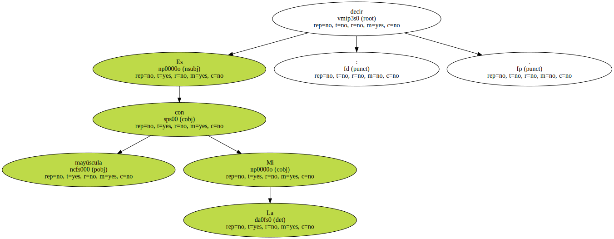

No es poco.
El hombre y el oso cuanto más feo peor para él , dicen ahora.
En 1812 los románticos españoles inventaron en las Cortes de Cádiz el liberalismo político.

Fue entonces también cuando los franceses en el lendemain de Napoleón inventaron con su sentido práctico la bragueta.
El liberalismo tuvo cierta influencia idealista , pero la bragueta inundó el mundo.
Y es que orinar es más importante que legislar.

El verdadero blasfemo es el agnóstico porque negándose a conocer - - o tratar de - - quiere eludir el mayor problema.
El perro es hipócritamente clerical.
El gato es ateo.
Los mejicanos que entran ilegalmente en California tienen que vérselas con la policía de emigración a la que nombran con una palabra que tiene su dosis de magia : la migra.
Es decir con mayúscula : La Mi.
No es que uno sea mejor que el vecino pero hay que tratar de parecerlo por respeto precisamente para el vecino.